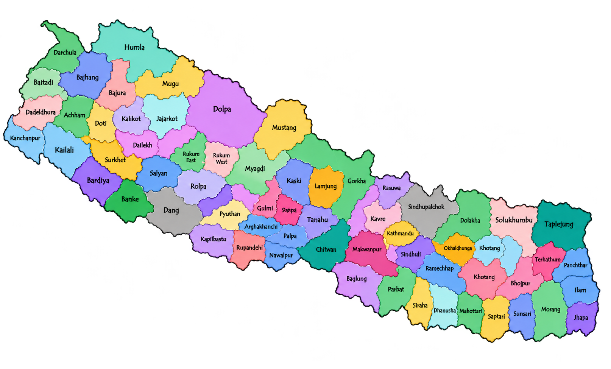

Pulse Nepal
77 districts. One country. One heartbeat

What is Pulse Nepal?:
Pulse Nepal is a national weather monitoring system made to make weather information easier for Nepali citizens to access,
It shows temperature, rainfall, and flood-prone areas so people can stay informed and be more aware of possible risks.
पल्स नेपाल के हो?:
पल्स नेपाल नेपाली नागरिकहरूका लागि मौसमसम्बन्धी जानकारी सजिलै उपलब्ध गराउन बनाइएको राष्ट्रिय मौसम निगरानी प्रणाली हो,
यसले तापक्रम, वर्षा र बाढी जोखिमयुक्त क्षेत्रहरूको जानकारी दिन्छ,
जसले गर्दा मानिसहरू मौसमबारे जानकार रहन र सम्भावित जोखिमप्रति सचेत हुन सक्छन्।